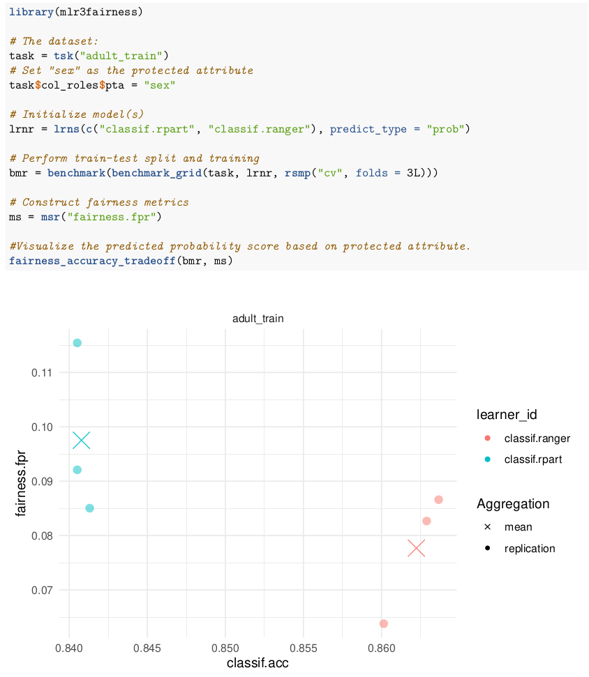
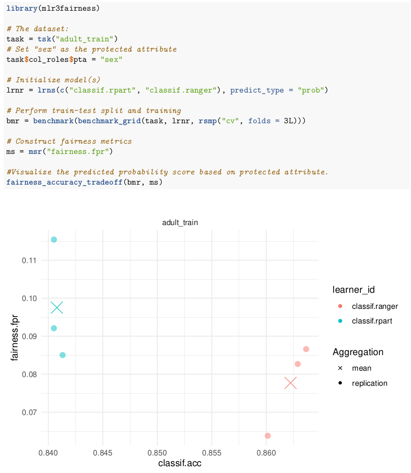

Fairness Audits and Bias Mitigation with mlr3fairness



1 LMU Munich
2 TU Dortmund
3 DFKI Kaiserslautern
Algorithmic fairness studies potentially negative effects of decisions derived from statistical / machine learning models. Biases in models can occur due to many reasons for example biases in the data, miss-specification of the model. In practice, biases are often measured based on differences in predictions between two groups.
Bias audits apply a Measure to score predictions.
Our software currently contains 19 different fairnes metrics..
We can construct a measure using the msr() shorthand, here the "fairness.fpr", measuring differences in FPR.
Combining bias mitigation techniques with learning algorithm can help creating fair(er) learners!
Integration with mlr3 (Lang et al. (2019)) allows for: - Bias audits for any mlr3 learner - Model debiasing as part of a mlr3 pipeline - Joint tuning of debiasing and ML model!
Unfairness can not always be detected if it is already in the data we use to build models. Better documentation of data and models can help make users aware of potential problems and are therefore an integral part of developing fair models.
| Report | Description |
|---|---|
report_modelcard() |
Modelcard for ML models (Mitchell et al. (2019)) |
report_datasheet() |
Datasheet for data sets (Gebru et al. (2018)) |
report_fairness() |
Fairness Report |
We are looking for contributors to further improve mlr3fairness.
We have several additions in mind, but are also open to input from the outside.
Get in touch via GitHub issues or email!
Gebru, Timnit, Jamie Morgenstern, Briana Vecchione, Jennifer Wortman Vaughan, Hanna Wallach, Hal Daumé III, and Kate Crawford. 2018. “Datasheets for Datasets.” arXiv Preprint arXiv:1803.09010.
Lang, Michel, Martin Binder, Jakob Richter, Patrick Schratz, Florian Pfisterer, Stefan Coors, Quay Au, Giuseppe Casalicchio, Lars Kotthoff, and Bernd Bischl. 2019. “mlr3: A Modern Object-Oriented Machine Learning Framework in R.” Journal of Open Source Software, December. https://doi.org/10.21105/joss.01903.
Mitchell, Margaret, Simone Wu, Andrew Zaldivar, Parker Barnes, Lucy Vasserman, Ben Hutchinson, Elena Spitzer, Inioluwa Deborah Raji, and Timnit Gebru. 2019. “Model Cards for Model Reporting.” In Proceedings of the Conference on Fairness, Accountability, and Transparency, 220–29. FAT* ’19. New York, NY, USA: Association for Computing Machinery. https://doi.org/10.1145/3287560.3287596.
Fairness Audits and Bias Mitigation with mlr3fairness
